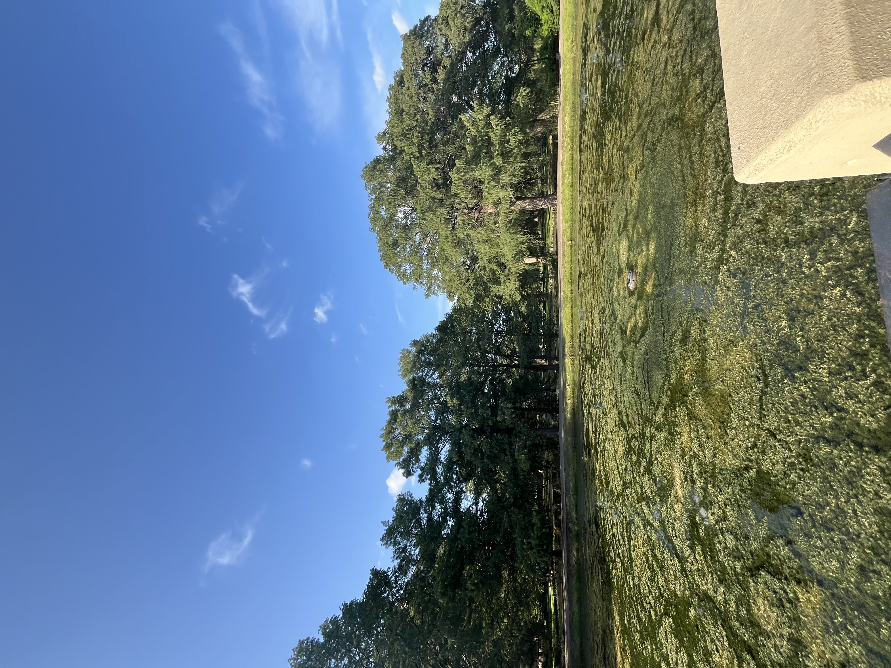
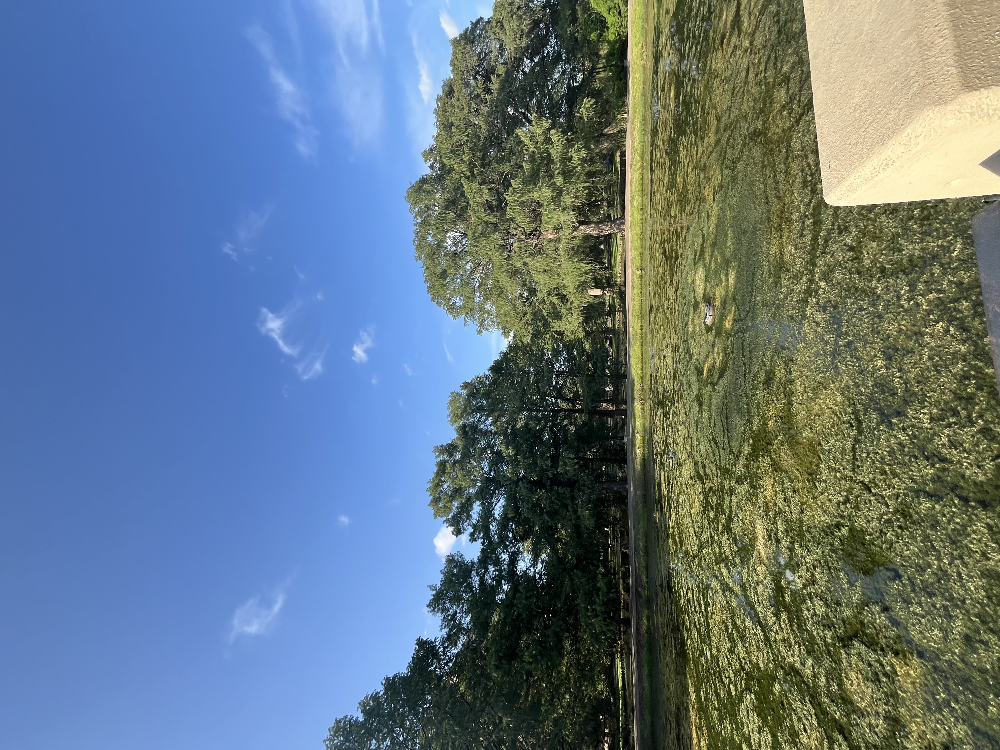

Likely inherited from my mother, I have a passion for gardening. I find joy in caring for plants and observing their unique growth and blooming processes. Some of my favorites are cilantro, aloe vera and my mother's plum trees. Although I am still a beginner, I enjoy reading about plants and experimenting with different techniques. The picture in the middle above was taken at Victorian Sample Florist, a local family-owned business. My family and I enjoy the hobby of exploring antique shops.
Going to the library has been one of my favorite activites since childhood. To no surpise, my favorite hobby is reading. I enjoy anything from educational or non-fiction to mystery and romance. Recently, I've set a goal to read at least 10 pages a day. My favorite place to read is at the park, beach, or river. During my studies, I took criminology and juveline deliquency classes, which introduced me to some fascinating books.
Below, you will see a little bit more facts about me.
| Favorite Animals | Favorite Places | Favorite Colors | Favorite Movies |
|---|---|---|---|
| Dogs | Eleanor Tinsley Park | Yellow | A Dog's Purpose |
| Sloths | Blanton Museum of Art | Purple | Leap Year |
| Otters | TXST University campus | Green | Inside Out 2 |
The purpose of this project is for education, and to study personal growth and progress of experience coding with HTML. I am so excited to continue this journey of learning. Thank you so much for visiting my website!